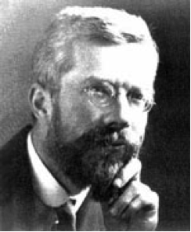
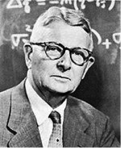
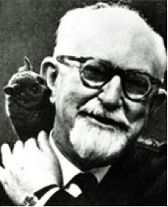
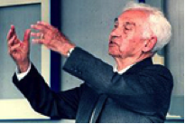

|
R. A. Fisher
The nature of inheritance
|
The Genetical Theory of Natural Selection (ch. 1-2)
Further Reading
Orr 2009 NRG 10: 531-539
Connallon and Clark Genetics 2014
Fitness Landscape of Beer
|

|
S. Wright
Shifting Balance vs Mass selection
|
Wright 1940 Am. Nat. 74: 232
Wade and Goodnight 1998 Evolution 52: 1537
Background
Coyne et al. started the exchange:
Coyne et al 1997 Evolution 51:643
Wade (above) and Peck responded:
Peck et al 1998 Evolution 52: 1834
Coyne rebuttal to Wade and Peck:
Coyne et al 2000 Evolution 54: 305
|

|
J. B. S. Haldane
Theory of a cline
|
Haldane 1948 J. Genetics 48: 277
Recent Example
Selection across an environmental gradient:
Mullen & Hoekstra 2008 Evolution, 62(7), 1555-1570
|

|
H. J. Muller
Evolution of Sex
|
Muller Am. Nat. 66:703 1932
Additional Reading
Hamilton Science 1967
|

|
T. G. Dobzhansky
Adaptive Polymorphism
|
Main reading:
Dobzhansky 1937 Genetics and the origin of species, Chapter 5.
Supplement:
Dobzhansky 1964 Am. Zoo. 4:443.
|

|
G. G. Simpson
Tempo and Mode of evolution
|
Simpson 1944 Tempo and Mode in Evolution Chapter 1
Supplement:
Fitch and Ayala 1994 PNAS 91:6717
|

|
E. Mayr
Species
|
Mayr 1963 Animal Species and Evolution Chapters 1 and 2
|

|
W. D. Hamilton
Social Behaviour
|
Hamilton 1964 J Theoret Biol 7: 1
Recent Review by Jeremy Van Cleve
Van Cleave 2014 BioRxiv
|

|
G. C. Williams
Group Selection
|
Williams 1966 Adaptation and Natural Selection, Chapter 4.
The false allure of group selection
Wilson 1986 Levels of Selection
|
|
Nettie Stevens
Sex Chromosomes
|
Stevens 1962
|

|
S. J. Gould
Punctuated Equilibrium
|
Gould and Eldridge 1993 Nature 366: 223.
Recent Review
Is there room for punctuated equilibrium in macroevolution:
Pennel, Harmon, and Uyeda 2013 TREE, 29(1), 23-32
|

|
M. Kimura
Neutral Theory
|
Kimura 1968 Nature 217: 624.
Kimura 1986 Phil Trans 312: 343.
A commentary questioning the applicability of the neutral theory
Hahn 2008 Evolution.
|
|
S. Ohno
Gene Duplication
|
Ohno 1970 Chapters 10-12
|

|
L. Marguilis
Origin of Eukaryotes
|
Sagan 1967 J. Theoret. Biol. 14:225.
The problem with PNAS - hybrid origin of caterpillars
Williamson 2009 PNAS
|
|
Felsenstein
Price
Sepkoski
Various
|
Raup and Sepkoski 1982 Science 215: 1501.
Felsenstein 1985 Am Nat 125: 1.
Price 1970 Nature 227: 520.
|